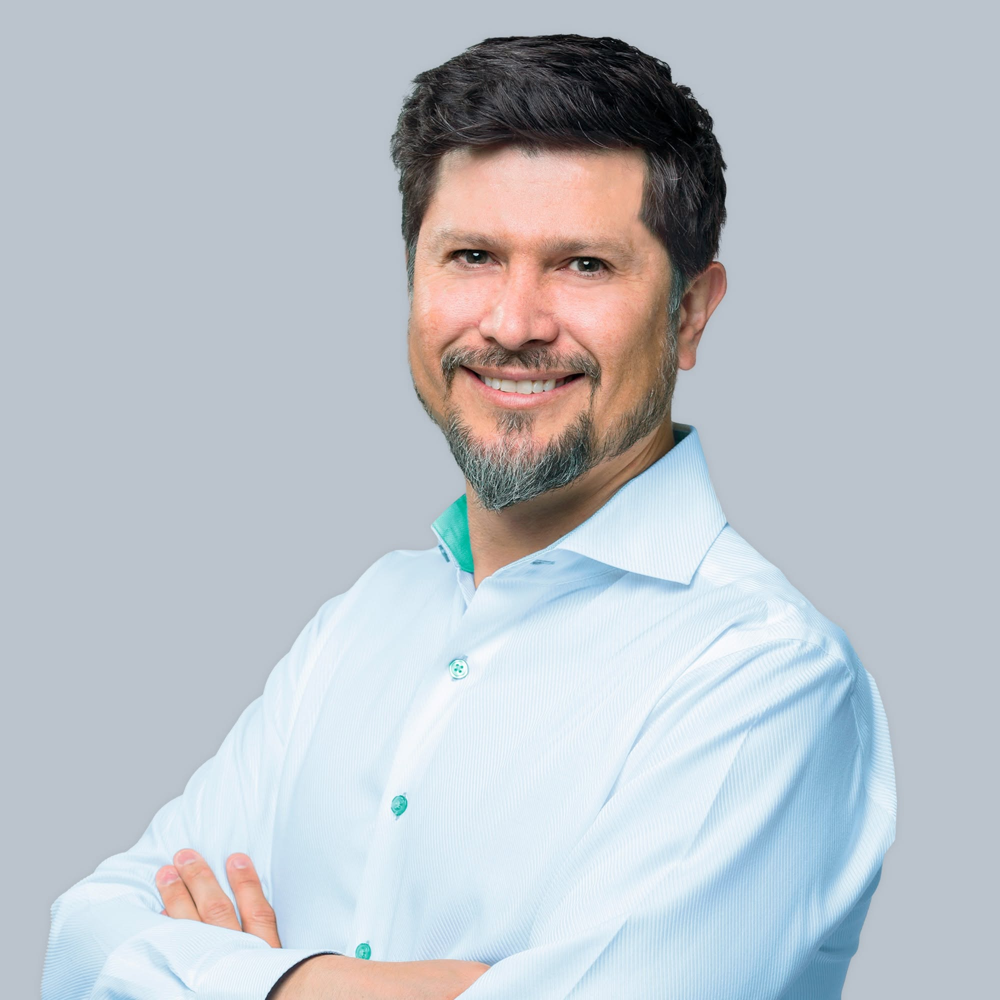

VENCEREMOS
Wanchaq, un buen lugar para vivir

Boris Aguilar
Alcalde de Wanchaq 2027 – 2030
Más seguridadpara tu familia
Más limpiezapara una ciudad que nos enorgullece
Más áreas verdespara una mejor calidad de vida
PLAN DE GOBIERNO · WANCHAQ · CUSCO
Boris Aguilar · VenceremosPlan de Gobierno · Wanchaq 2027–2030
Página 2
Vecino wanchino
Wanchaq significa germinación, crecimiento y desarrollo. Son valores que
reflejan la identidad de nuestro distrito y la capacidad de nuestra
comunidad para seguir avanzando y construir un mejor futuro.
Mi vínculo con Wanchaq me ha permitido conocer de cerca las necesidades,
fortalezas y oportunidades de nuestro distrito. Desde esa experiencia,
valoro el esfuerzo de sus vecinos y el potencial que tenemos para seguir
creciendo juntos.
Soy economista, investigador y gestor, con experiencia en la dirección de
proyectos de inversión pública, fortalecimiento institucional y desarrollo
social. Mi trabajo ha estado orientado a generar oportunidades y
contribuir al bienestar de las personas.
Egresado de la Maestría en Gerencia Social de la Pontificia Universidad
Católica del Perú y Economista por la Universidad Nacional de San Antonio
Abad del Cusco, pero, sobre todo, soy un vecino wanchino que cree en el
diálogo, la participación y el trabajo conjunto.
Sigamos construyendo un distrito con más oportunidades, bienestar y
desarrollo para todos.
Boris Enrique Aguilar Luna
Economista · Investigador · Gestor
Wanchaq, un buen lugar para vivir
Visión del distrito al 2030
Construir un Wanchaq donde cada familia tenga más oportunidades para
vivir mejor; un distrito seguro, moderno y emprendedor, que impulse el
desarrollo de las personas, fortalezca nuestra identidad cultural y
genere bienestar, progreso y calidad de vida para todos.
Políticas municipales
- Una gestión transparente, eficiente y cercana a la gente.
- Más seguridad para nuestras familias mediante prevención, tecnología y trabajo conjunto con los vecinos.
- Recuperación y cuidado de parques, calles y espacios públicos.
- Apoyo al emprendimiento, la inversión y la generación de empleo.
- Un distrito limpio, ordenado y comprometido con el cuidado del medio ambiente.
- Atención prioritaria a niños, jóvenes, adultos mayores y personas con discapacidad.
Nuestros principios
- Honestidad y transparencia.
- Respeto y cercanía con los vecinos.
- Escuchar para actuar y resolver.
- Uso responsable de los recursos públicos.
- Trabajo, compromiso y resultados.
- Amor por Wanchaq y confianza en su gente.
Boris Aguilar · VenceremosPlan de Gobierno · Wanchaq 2027–2030
Página 3
¿Qué queremos?
- Vivir en un distrito más seguro y tranquilo.
- Tener más oportunidades para trabajar, emprender y progresar.
- Contar con parques, calles y espacios públicos limpios y bien cuidados.
- Acceder a servicios municipales más rápidos y eficientes.
- Un distrito limpio, ordenado y bien cuidado para nuestras familias.
- Promover el deporte, la cultura y actividades para toda la familia.
- Construir un Wanchaq con más bienestar, oportunidades y calidad de vida.
Nuestras 6 propuestas
Ejes concretos de trabajo para transformar el distrito.
1
Wanchaq seguro, limpio y ordenado
Recuperaremos la tranquilidad y el orgullo de vivir en Wanchaq mediante tecnología moderna, prevención y una gestión eficiente de limpieza pública.
- Drones de vigilancia y monitoreo preventivo en tiempo real.
- Cámaras inteligentes y central de monitoreo operativa las 24 horas.
- Patrullaje integrado entre Serenazgo, Policía y vecinos organizados.
- Recuperación de parques y espacios públicos para las familias.
- Limpieza eficiente, reciclaje y cultura ciudadana.
- Ordenamiento del comercio y recuperación de veredas.
- Soterrado progresivo de cables para una ciudad más limpia y moderna.
2
La Alameda de la Cultura
Más espacios para caminar, encontrarse y disfrutar en familia.
- Áreas de lectura, descanso y recreación.
- Wi-Fi gratuito y cargadores solares.
- Árboles y plantas nativas del Cusco.
- Iluminación LED solar y mobiliario urbano moderno.
- Espacios seguros y accesibles para todos.
- Más de 4 kilómetros de integración peatonal y conexión entre barrios.
Boris Aguilar · VenceremosPlan de Gobierno · Wanchaq 2027–2030
Página 4
3
Más salud para nuestras familias
Impulsaremos la culminación y puesta en funcionamiento del Hospital del Cáncer para brindar atención especializada a miles de familias de Cusco.
- Consultorios y servicios médicos especializados.
- Equipamiento oncológico de última generación.
- Mayor capacidad de atención y diagnóstico oportuno.
- Atención integral para pacientes y sus familias.
4
Mercados modernos para las familias
Construcción y modernización integral de los mercados de Wanchaq y Ttio.
- Infraestructura moderna, segura y funcional.
- Mejores condiciones sanitarias.
- Mayor comodidad para comerciantes y consumidores.
- Estacionamiento y frigorífico subterráneo.
- Mercados dignos para las familias wanchinas.
5
Complejo cultural y de entretenimiento Arena Wanchaq
Wanchaq volverá a ser escenario de grandes eventos culturales, deportivos y artísticos.
- Nueva sede del Festival Internacional del Cusco.
- Conciertos, convenciones y ferias nacionales e internacionales.
- Tecnología moderna, seguridad y amplios espacios.
- Oportunidades para artistas, emprendedores y jóvenes.
- Más empleo y dinamización de la economía local.
6
Más oportunidades para crecer
Wanchaq: distrito financiero, tecnológico y comercial.
- Simplificación de trámites y apoyo a la formalización.
- Ningún negocio será perseguido por querer crecer.
- Programa Municipal de Desarrollo Vertical y Renovación Urbana para simplificar licencias y promover edificaciones seguras.
- Fortalecimiento de la inversión privada.
- Acompañamiento técnico para nuevas inversiones y edificaciones.
- Más empleo, innovación y oportunidades para todos.
Boris Aguilar · VenceremosPlan de Gobierno · Wanchaq 2027–2030
Página 5
Plaza Túpac Amaru: el nuevo corazón de Wanchaq
Símbolo de nuestra historia, identidad y futuro. Un moderno complejo urbano de 3 niveles para la cultura, la movilidad y el encuentro ciudadano.
1er subterráneoCentro de Convenciones y Formación
- Moderno Centro de Convenciones para eventos y reuniones.
- Salas multifuncionales para jóvenes, escolares y organizaciones.
- Espacios para danza, arte, capacitación y desarrollo cultural.
- Equipamiento moderno de iluminación y sonido para actividades académicas, culturales y artísticas.
2do subterráneoEstacionamiento Inteligente
- Más de 600 estacionamientos para vehículos, motocicletas y bicicletas.
- Accesos modernos mediante ascensores y sistemas automatizados.
- Seguridad permanente y monitoreo las 24 horas.
- Menos congestión vehicular y mayor orden en el entorno de la plaza.
Centro de Bienestar Animal Wanchaq
- Amor, cuidado y protección para nuestras mascotas.
- Construiremos el primer Centro Municipal de Bienestar Animal de Wanchaq, un espacio moderno para promover la tenencia responsable de mascotas y proteger la salud pública.
- Porque una ciudad que cuida a sus mascotas también cuida a sus familias.
«El verdadero plan lo construiremos junto a los vecinos.» — Conoce nuestras propuestas, comparte tus ideas y súmate al cambio. Tu opinión también construye Wanchaq.
Movimiento Venceremos · Boris Aguilar
boris-wanchaq.vercel.app
Wanchaq · Cusco · Perú